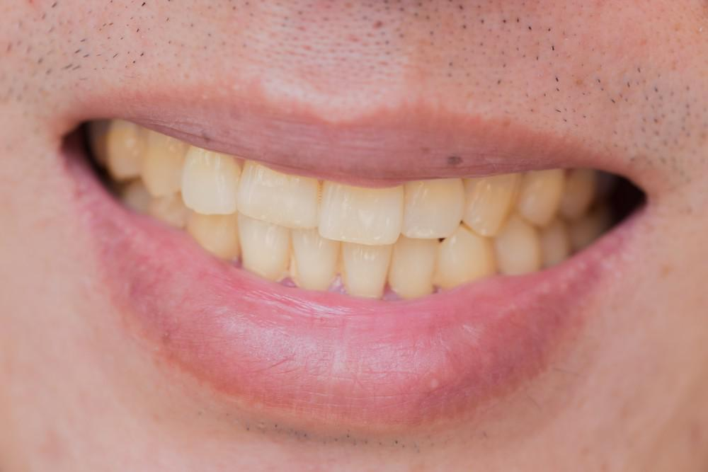
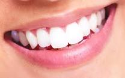

Do you see nasty yellow stains on your teeth, and you can't find a solution to permanently whiten your teeth?
We have the product just for you! Try out our new product, the Auto-Brush! This is a device that can help you
brush your teeth and remove all the leftover
bacteria and crumbs between your teeth.
This is your teeth before using the auto brush:
In our Auto-Brush we have robotic arms with an extending mechanism which will help extend till your mouth.

This is your teeth after using the Auto-Brush:

The Auto-Brush includes a toothpaste dispenser,built in toothbrush, tongue cleaner and flossing strings to ensure great dental hygiene.
Our device can be securely fixed on any flat surfaces. Auto-Brush uses rechargable batteries. The batteries last two weeks (If teeth are brushed twice a day).